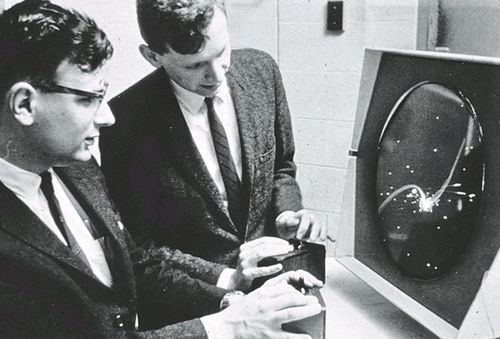
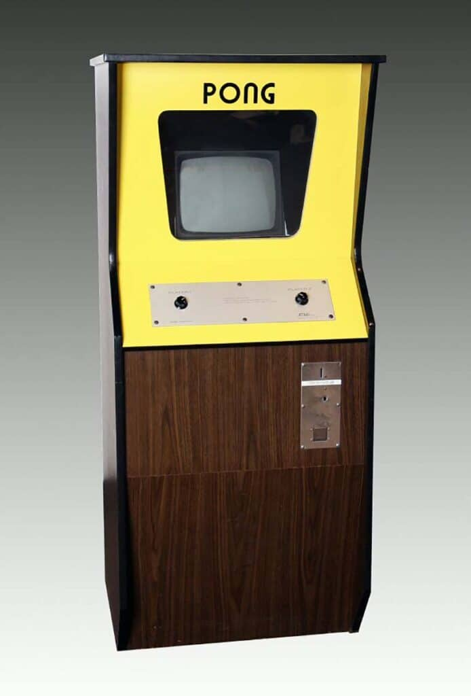
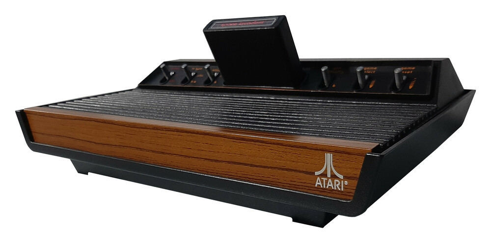
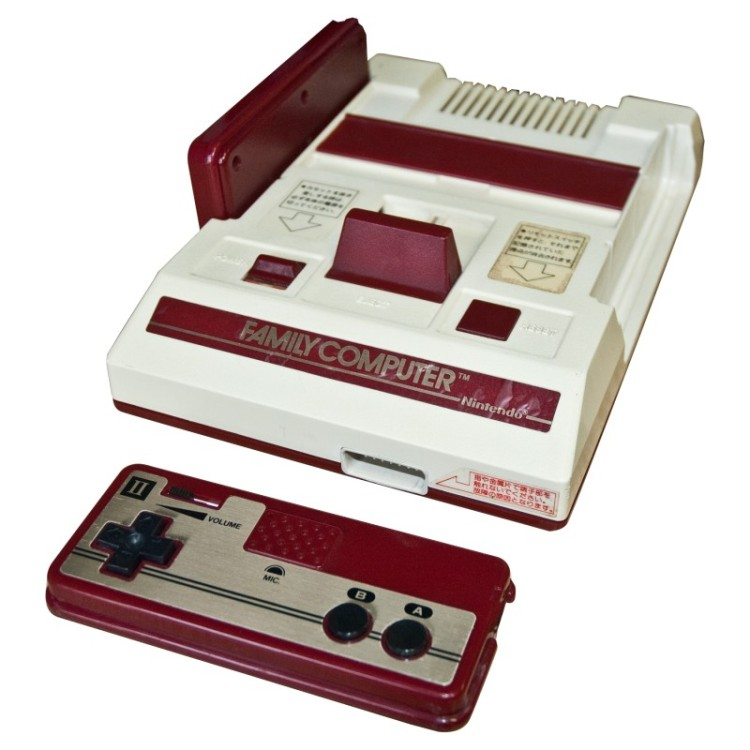

For two decades, games moved from a machine in a public space to a box
under the television. The controller came with it.
Years
1962—1985
Exhibits
04
Focus
Public play → the living room
Exhibit 011962

Photo: Computer History Museum, gift of Hewlett-Packard Company.
Catalog record.
1962
Spacewar!
Before home consoles, there was a laboratory. Spacewar! turned a
PDP-1 into a two-player duel: two ships, a star, and a gravity well.
It was not sold in shops, but it proved that a computer could be a
place for play.
Why it mattered
It made the screen a shared space. Two people could sit at one
machine, compete, and understand the rules without a manual.
Exhibit 021972

Photo: The Strong National Museum of Play, Pong arcade game, 1972.
Image source.
1972
Pong
Two paddles, one ball, and a score. Pong took a simple idea and made
it public: a machine in a bar, a line of people waiting, and a game
anyone could understand in seconds.
Why it mattered
It turned play into a social routine. The rules were visible on
the screen, and the competition did not need a manual.
Exhibit 031977

Photo: The Centre for Computing History, Atari VCS, object CH9400.
Object record.
1977
Atari 2600
A console with swappable cartridges brought arcade games home. The
box under the television was no longer limited to the games built
into it; the library could grow.
Why it mattered
The platform became a library. Games could be bought, collected,
and traded, and the living room became a place for play.
Exhibit 041983 / 1985

Photo: The Centre for Computing History, Nintendo Famicom, object CH20983.
Object record.
1983 / 1985
Famicom / NES
Nintendo's family computer combined a cheap console, a controller
with a cross-shaped pad, and games designed for the home. In North
America, the NES helped rebuild the market after the crash of 1983.
Why it mattered
The console became a family object. The controller, the television,
and the living room were now part of the same designed experience.
References
Sources and credits
Historical details were checked against the museum records below.
Photographs are used for coursework with teacher permission; full
credits are repeated under each image and in CREDITS.md.